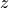
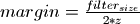
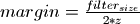

2.1.5. Convolution near the data edges¶
So far we have seen that Sirius allows for filtering and tile processing. The use of a filter always comes with the use of margin across data edges so that all the data samples can be filtered (or interpolated depending on the zoom factor). When tiling the original data, two different types of edges arise : the real data edges, and the virtual ones (the edges between two tiles).
2.1.5.1. The real edges¶
When edges are real, since the use of the Fourier Transform implicitly periodizes the signal, the results near the edges are the ones one would have with a spatial convolution if the origin samples signal was periodized. See the following code-block :
In [1]: tri = np.array([1,2,3,2,1]);
# only one sample is valid in this configuration
In [2]: np.convolve(tri,tri,mode='valid')
Out[2]: array([19])
# keeping the same number of samples as the original image implies the add of margins
In [3]: np.convolve(tri,tri,mode='same')
Out[3]: array([10, 16, 19, 16, 10])
# ... which are not the same in spatial and frequential domain by default
In [4]: np.real(np.fft.ifft(np.fft.fft(tri)*np.fft.fft(np.fft.ifftshift(tri))))
Out[4]: array([14., 17., 19., 17., 14.])
# in spatial domain the default margins are zeros
In [5]: margin = 2;
In [6]: tri_zpd = np.concatenate((np.zeros(margin), tri, np.zeros(margin)))
In [7]: np.convolve(tri_zpd,tri,mode='same')[margin:margin+tri.size]
Out[7]: array([10., 16., 19., 16., 10.])
# when in frequential domain the margins comes from the implicit periodization of the signal
In [8]: tri_per = periodize(tri,margin,dtype=np.float32)[1:margin*tri.size]
In [9]: np.convolve(tri_per,tri,mode='same')[margin:margin+tri.size]
Out[9]: array([14., 17., 19., 17., 14.])
2.1.5.2. The virtual edges¶
Dealing with virtual edges is more critical because handling the real edges is really just about choosing a convention among several ones. The virtual edges, on the other hand, must be treated carefully to prevent artifacts from paving the output data.
The idea is that, to compute correctly the tile edges, one needs to add half the filter size margins to it. According to [Press et al, 1992] this can be done by two different ways:
The overlap and save solution
This is the simplest approach as it is just about margin the tile with real samples surrounding it. Then, the output samples inside the margins must be discarded as they have been approximated with a periodization of the input samples near the edges.
The tile samples, margins excluded, are correctly convolved and the only ones kept.
The overlap and add solution
The overlap and add solution consists in zero padding the input tile. Margins are then formed by zeros instead of the subsequent tile samples. The input tiles then do not overlap at all. However this time the tile margin output samples are not discarded. They are kept and added to the result of the first, half the filter size, samples of the subsequent input tile (margins excluded).
In other words, all samples from the output tiles are kept. The samples originating from the associated input tile (meaning margins excluded) are not all correctly computed. This comes from the zero padding of the input tile. The firsts and lasts samples of the input tiles are computed with contributions coming from the zeros inside margins. The zeros cancel some filter weighs, hence the very last sample of an input tile is computed with only half the contributions it requires (not exactly half if the filter has odd number of samples). Then the same could be said for the very first margin sample (the sample right next to last sample of the input tile). Because output tiles are kept intact and then added to the overlapping part (half filter size) of the subsequent output tile, the lack of contributions is perfectly compensated.
2.1.5.3. What Sirius proposes¶
Here is expressed the way Sirius handles the margins:
- For the real edges the default behavior is the mirroring of the input data. However the user is free to set the behavior to zero_padding instead.
- For the virtual edges Sirius uses the overlap and save solution discussed earlier.
Note
When a zoom factor  is greater than  , then the margin size are not half of the filter size
but rather .
, then the margin size are not half of the filter size
but rather .